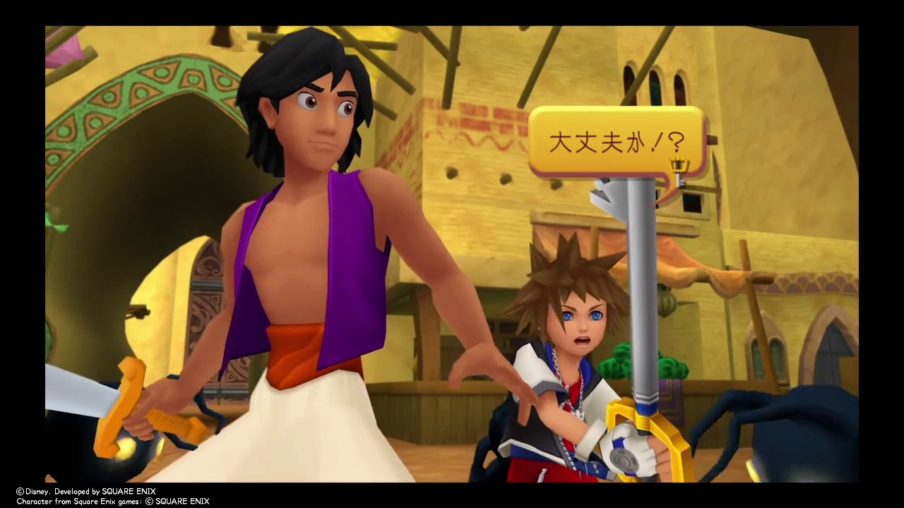
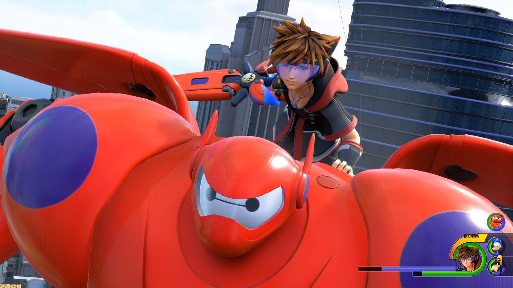
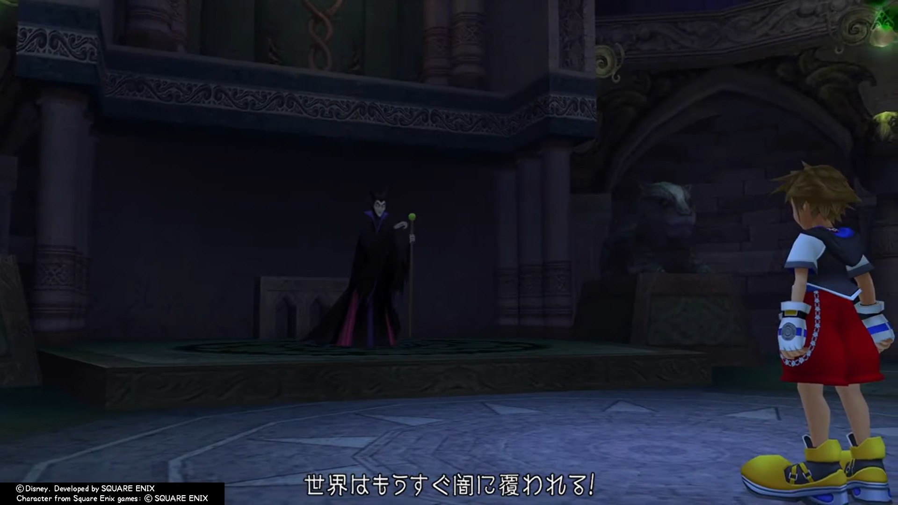

1，ニモ 登場していない
ニモは、まだキングダムハーツに登場していませんが、多くのプレイヤーから参戦を求められています。
2，アラジン 登場している
アラジンは、主人公と一緒に戦ってくれる人物としてキングダムハーツに参戦しています。 
3，ベイマックス 登場している
ベイマックスは、主人公を乗せて空を飛べることができます。 
4，マレフィセント 登場している
マレフィセントは主人公達の敵として参戦します。 